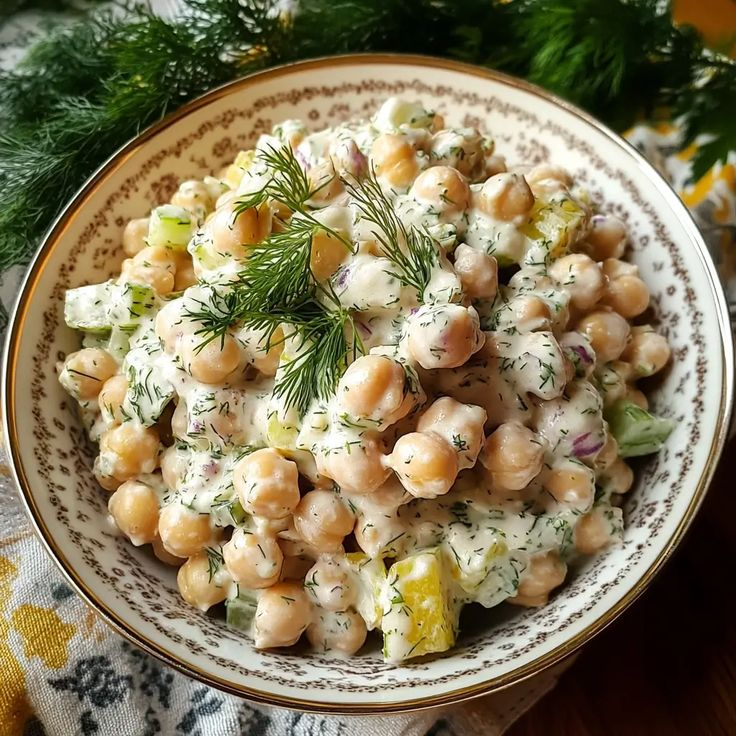

← Back to Menu
Creamy Chickpea Bowl
A healthy, protein-packed bowl with a creamy twist.

Ingredients
- 1 can chickpeas
- 2 tbsp olive oil
- 1 onion, chopped
- 2 garlic cloves, minced
- ½ cup yogurt
- Salt & pepper to taste
- Fresh parsley for garnish
Instructions
- Heat olive oil in a pan and sauté onion and garlic until soft.
- Add chickpeas and cook for 5 minutes, stirring occasionally.
- Lower the heat and stir in yogurt, season with salt & pepper.
- Simmer for 10 minutes until creamy.
- Serve warm, garnished with fresh parsley.